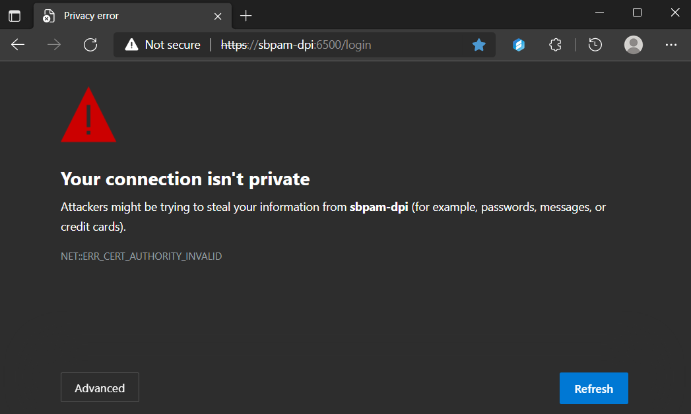
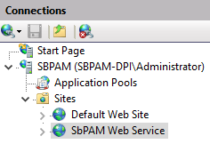
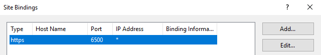
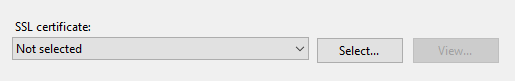
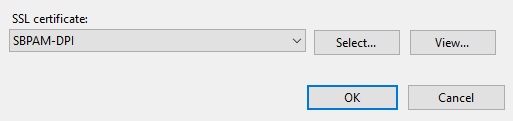
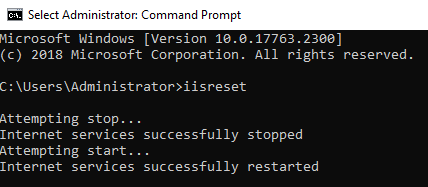

Summary
In certain SbPAM upgrade scenarios, the certificate binding for SbPAM's IIS website can disassociate during the upgrade process. This results in users receiving a NET::ERR_CERT_AUTHORITY_INVALID error in their browser when they navigate to the SbPAM website using the CN or one of the SANs in the previously bound certificate.
Instructions
To resolve this behavior, open Internet Information Services (IIS) Manager on the SbPAM server, and locate the SbPAM Web Service in the left sidebar under Connections.

With SbPAM Web Service highlighted, click Bindings... in the right sidebar under Actions. Highlight the https binding for the port used to access SbPAM (6500, by default) and click Edit...

Notice no certificate is selected for the SSL certificate dropdown.

Change this dropdown so the expected certificate is selected (the certificate associated with the SbPAM website prior to the upgrade) and click OK.

Finally, open an elevated Command Prompt and perform an iisreset.

Users should now be able to access the SbPAM website using the URL that worked prior to upgrading SbPAM.